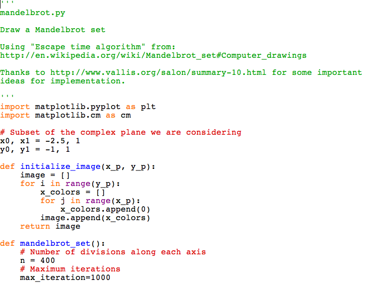

Once you download the solutions ZIP file, and extracted it you will find the solutions for each chapter in the corresponding sub-directory. Before you can try them out, you will have to open them first in IDLE.
Let's consider the solution to a challenge posed in Chapter 6 to draw the Mandelbrot set. Start IDLE and click on the menu item File > Open and navigate to the location where you extracted the directory above and open the file mandelbrot.py.
To run the program, click on Run > Run Module and you should see the Mandelbrot set in the matplotlib window.

If you face any issues trying out the solutions, feel free to email me at doingmathwithpython@gmail.com or post your query to any of the following: